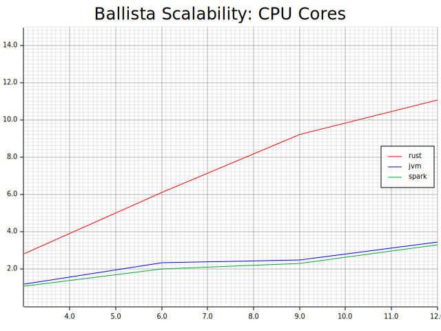

Benchmarks
Each query engine is unique in terms of performance, scalability, and resource requirements, often with different trade-offs. It is important to have good benchmarks to understand the performance and scalability characteristics.
Measuring Performance
Performance is often the simplest characteristic to measure and usually refers to the time it takes to perform a particular operation. For example, benchmarks can be built to measure the performance of specific queries or categories of query.
Performance tests typically involve executing a query multiple times and measuring elapsed time.
Measuring Scalability
Scalability can be an overloaded term and there are many different types of scalability. The term scalability generally refers to how performance varies with different values for some variable that affects performance.
One example would be measuring scalability as total data size increases to discover how performance is impacted, when querying 10 GB of data versus 100 GB or 1 TB. A common goal is to demonstrate linear scalability, meaning that querying 100 GB of data should take 10 times as long as querying 10 GB of data. Linear scalability makes it easy for users to reason about expected behavior.
Other examples of variables that affect performance are:
- Number of concurrent users, requests, or queries.
- Number of data partitions.
- Number of physical disks.
- Number of cores.
- Number of nodes.
- Amount of RAM available.
- Type of hardware (Raspberry Pi versus Desktop, for example).
Concurrency
When measuring scalability based on number of concurrent requests, we are often more interested in throughput (total number of queries executed per period of time) rather than the duration of individual queries, although we typically would collect that information as well.
Automation
Benchmarks are often very time-consuming to run and automation is essential so that the benchmarks can be run often, perhaps once per day or once per week, so that any performance regressions can be caught early.
Automation is also important for ensuring that benchmarks are executed consistently and that results are collected with all relevant details that might be needed when analyzing the results.
Here are some examples of the type of data that should be collected when executing benchmarks:
Hardware Configuration
- Type of hardware
- Number of CPU cores
- Available memory and disk space
- Operating system name and version
Environment
- Environment variables (being careful not to leak secrets)
Benchmark Configuration
- Version of benchmark software used
- Version of software under test
- Any configuration parameters or files
- Filenames of any data files being queried
- Data sizes and checksums for the data files
- Details about the query that was executed
Benchmark Results
- Date/time benchmark was started
- Start time and end time for each query
- Error information for any failed queries
Comparing Benchmarks
It is important to compare benchmarks between releases of the software so that changes in performance characteristics are apparent and can be investigated further. Benchmarks produce a lot of data that is often hard to compare manually, so it can be beneficial to build tooling to help with this process.
Rather than comparing two sets of performance data directly, tooling can perform a "diff" of the data and show percentage differences between two or more runs of the same benchmark. It is also useful to be able to produce charts showing multiple benchmark runs.
Publishing Benchmark Results
Here is an example of some real benchmark results, comparing query execution time for the Rust and JVM executors in Ballista, compared to Apache Spark. Although it is clear from this data that the Rust executor is performing well, the benefit can be expressed much better by producing a chart.
| CPU Cores | Ballista Rust | Ballista JVM | Apache Spark |
|---|---|---|---|
| 3 | 21.431 | 51.143 | 56.557 |
| 6 | 9.855 | 26.002 | 30.184 |
| 9 | 6.51 | 24.435 | 26.401 |
| 12 | 5.435 | 17.529 | 18.281 |
Rather than chart the query execution times, it is often better to chart the throughput. In this case, throughput in terms of queries per minute can be calculated by dividing 60 seconds by the execution time. If a query takes 5 seconds to execute on a single thread, then it should be possible to run 12 queries per minute.
Here is an example chart showing the scalability of throughput as the number of CPU cores increases.

Transaction Processing Council (TPC) Benchmarks
The Transaction Processing Council is a consortium of database vendors that collaborate on creating and maintaining various database benchmark suites to allow for fair comparisons between vendor's systems. Current TPC member companies include Microsoft, Oracle, IBM, Hewlett Packard Enterprise, AMD, Intel, and NVIDIA.
The first benchmark, TPC-A, was published in 1989 and other benchmarks have been created since then. TPC-C is a well known OLTP benchmark used when comparing traditional RDBMS databases, and TPC-H (discontinued) and TPC-DS are often used for measuring performance of "Big Data" query engines.
TPC benchmarks are seen as the "gold standard" in the industry and are complex and time consuming to implement fully. Also, results for these benchmarks can only be published by TPC members and only after the benchmarks have been audited by the TPC. Taking TPC-DS as an example, the only companies to have ever published official results at the time of writing are Alibaba.com, H2C, SuperMicro, and Databricks.
However, the TPC has a Fair Use policy that allows non-members to create unofficial benchmarks based on TPC benchmarks, as long as certain conditions are followed, such as prefixing any use of the term TPC with "derived from TPC". For example, "Performance of Query derived from TPC-DS Query 14". TPC Copyright Notice and License Agreements must also be maintained. There are also limitations on the types of metrics that can be published.
Many open source projects simply measure the time to execute individual queries from the TPC benchmark suites and use this as a way to track performance over time and for comparison with other query engines.
This book is also available for purchase in ePub, MOBI, and PDF format from https://leanpub.com/how-query-engines-work
Copyright © 2020-2023 Andy Grove. All rights reserved.